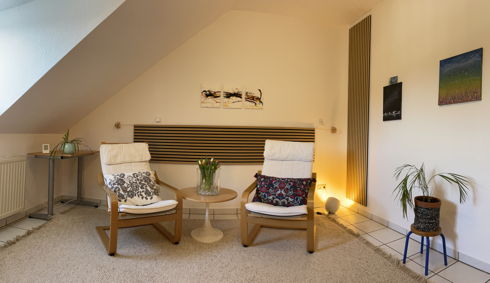

Fünf Themenbereiche, in denen ich Dich begleiten kann
„Sich (für sich) selbst (zu entscheiden). Das ist normalerweise kein plötzlicher Einbruch von Erkenntnis, es sind tastende, ambivalente, verwirrte und unsichere Bewegungen auf einem neuen Gebiet.“
Carl R. Rogers, Von Mensch zu Mensch (1984)
In meiner Begleitung kannst Du Selbstfreundschaft entwickeln, Dich liebevoll und geduldig Deinem Erleben zuwenden. Du stärkst Deine Intuition und lernst, wieder klar zu spüren, was Dich trägt und welche Entscheidungen Deinem inneren Weg entsprechen. Gleichzeitig lernst Du, Deinen eigenen Weg bewusst zu gestalten, kleine Veränderungen wahrzunehmen und Schritt für Schritt Verantwortung für Dein Leben zu übernehmen.
Die Themenpunkte sind nicht starr zu verstehen, sondern sollen Dir eine grobe Orientierung geben und zeigen, welche Aspekte in der Begleitung Raum finden können.

In meiner Begleitung entdeckst Du, wie Du liebevoller und geduldiger mit Dir selbst umgehst. Du lernst, Deine Gefühle, Bedürfnisse und inneren Werte wahrzunehmen und Schritt für Schritt in Deinen Alltag zu integrieren.
Du entwickelst:
Du befindest Dich in einer Lebensphase mit Veränderungen, die Mut und Selbstvertrauen erfordern? Du wünschst Dir Unterstützung, um Deiner inneren Stimme zu vertrauen und Übergänge bewusst zu gestalten?
Gemeinsam erkunden wir:
In Phasen tiefgreifender Veränderungen – etwa durch Schwangerschaft, Geburt, Pflege von Angehörigen, Verlust, Trauer oder andere einschneidende Lebensereignisse – kann eine begleitende Präsenz sehr hilfreich sein.
Meine Begleitung unterstützt Dich dabei:
Träume sind wertvolle Hinweise auf Deine inneren Prozesse. Gemeinsam erforschen wir, welche Botschaften sie für Dich bereithalten.
Dabei gilt:
Dieses Angebot richtet sich an Fachkräfte, die beruflich mit Menschen arbeiten und ihre Rolle sowie bestimmte Situationen reflektieren möchten – zum Beispiel Hebammen, Pädagoginnen, Erzieherinnen, Ergotherapeutinnen, Logopädinnen, Coachs oder Beraterinnen.
Supervision ist ein geschützter Raum, in dem Du berufliche Situationen reflektieren, Deine Rolle bewusst wahrnehmen und herausfordernde Themen aus dem Arbeitsalltag achtsam betrachten kannst. Hier steht die Qualität Deiner beruflichen Beziehungen im Mittelpunkt.
Die Supervision unterstützt Dich dabei:
Da das Angebot einen beruflichen Bezug hat, kann es in vielen Fällen steuerlich geltend gemacht werden.
Meine Begleitung ist ein Raum für Achtsamkeit, Reflexion und bewusste Entscheidungen. Du findest hier keine fertigen Lösungen – sondern Unterstützung, Vertrauen und Orientierung auf Deinem persönlichen Weg.